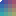
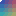
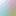
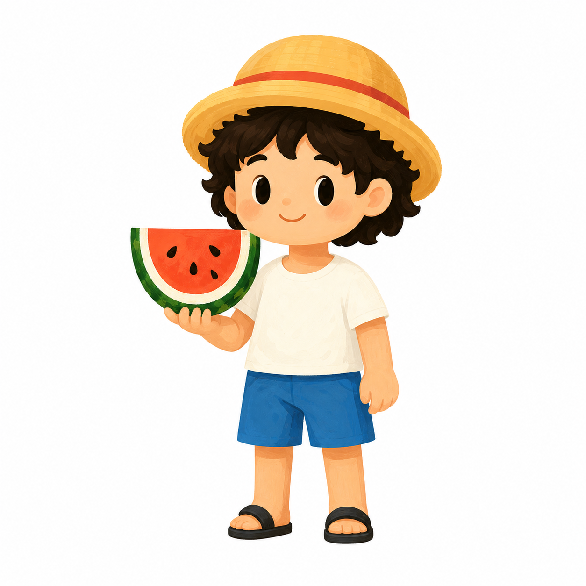
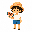
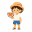

pixel-art
目标 16×16 · 色数 5
透明 0 · 半透明 0
机器中位 0.66 ms（转换 0.55 / 渲染 0.11）
四类输入 × 三个现有 preset。图片仅用于机器确定性结果的人工复核。
Palette split boundary: corrected to sorted.length - 1.
manualReview: pending · 不自动推荐最佳 preset
来源：脚本内存生成；未保存源 PNG
来源：脚本内存生成；未保存源 PNG
来源：脚本内存生成；未保存源 PNG

目标 16×16 · 色数 16
透明 3 · 半透明 0
机器中位 1.35 ms（转换 1.25 / 渲染 0.09）

目标 16×16 · 色数 16
透明 3 · 半透明 0
机器中位 0.78 ms（转换 0.72 / 渲染 0.08）

目标 16×16 · 色数 16
透明 1 · 半透明 255
机器中位 1.46 ms（转换 1.32 / 渲染 0.09）


目标 32×32 · 色数 16
透明 0 · 半透明 0
机器中位 12.40 ms（转换 12.24 / 渲染 0.14）

目标 32×32 · 色数 16
透明 0 · 半透明 0
机器中位 161.08 ms（转换 160.95 / 渲染 0.14）

目标 32×32 · 色数 16
透明 0 · 半透明 0
机器中位 168.44 ms（转换 168.27 / 渲染 0.18）